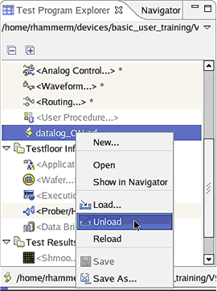
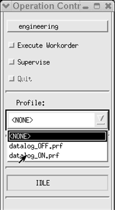

Unloading a data logging profile
About this task
This task describes how to unload a data logging profile. For a description of how to load data logging profiles, see Loading a data logging profile.
You unload a data logging profile when you want to change the flags set by this profile.
When you unload a data logging profile, all flags defined in the data logging profile remain set in the test system. You can set additional flags or change flags by using the flag user interfaces. These changes will not be overwritten by a data logging profile during test execution. This can be useful for debugging.
You can unload a data logging profile either in the Test Program Explorer, which is part of the Setup perspective or in the operation control window.
Before you begin
The SmarTest software must be running.
Procedures
Unloading a data logging profile using the Test Program Explorer
- In the Test Program Explorer, right-click the profile item and select
Unload.

- The name of the profile in the Test Program Explorer tree is replaced by <Profile...>.
Unloading a data logging profile using the operation control
- In the Operation Control window, click the Profile list box. A list
containing all available data logging profiles is displayed:

- Choose <NONE>. The list box is closed and <NONE> is displayed in the Profile field.
Results
You have unloaded a data logging profile. You can change the flags set by the profile. These changes will not be overwritten by a data logging profile during test execution.
Functional changes
- Introduced before SmarTest 6.3.2